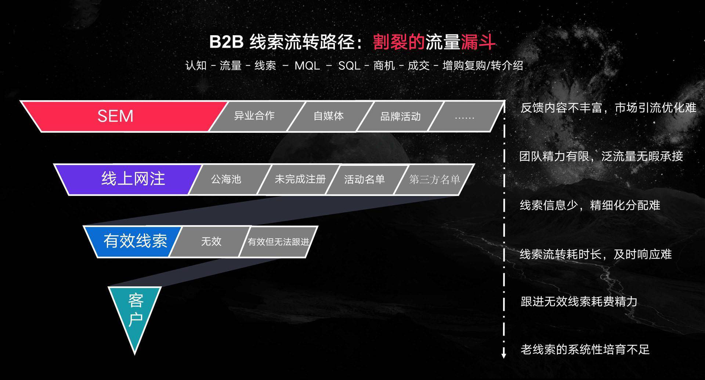
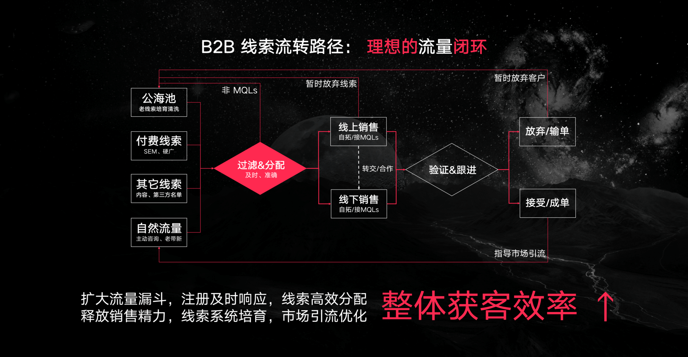
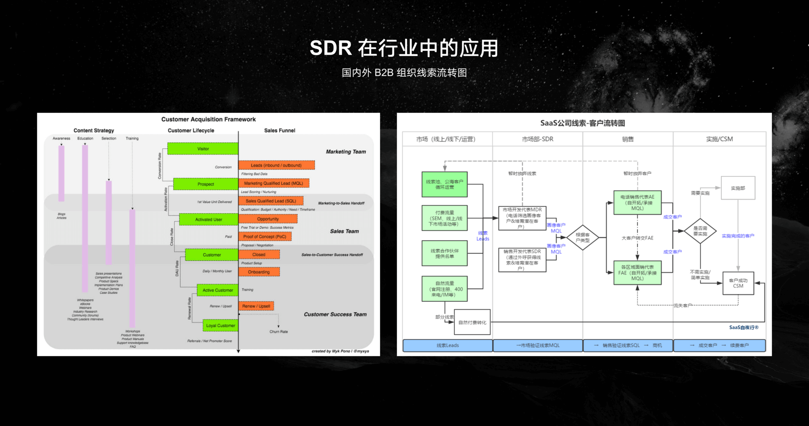

- 00 开篇词 成为下一个万亿市场风口上的操盘人.md.html
- 01 To B市场营销到底是做什么的？.md.html
- 02 To B消费心理学：如何把握客户CEO心理，让他买单？.md.html
- 03 第一印象（上）：如何策划一场产品发布会？.md.html
- 04 第一印象（下）：如何策划一场产品发布会？.md.html
- 05 Leads：如何成体系地寻找高质量的Leads？.md.html
- 06 案例：怎样0成本把一个新产品的市场认知率做到百分之76？.md.html
- 07 产品世界观：如何构建一个好的对外产品故事体系？.md.html
- 08 口碑：如何打造一个有影响力的Demo？.md.html
- 09 后疫情时代，如何做To B市场品牌内容的线上转型？.md.html
- 10 如何用“周边”产品构建To B影响力？.md.html
- 11 打造案例（上）：如何做优质客户案例的选型和内容构造？.md.html
- 12 打造案例（中）：如何引发现象级讨论，打赢PR战役？.md.html
- 13 打造案例（下）：如何通过营销战役把商机转化为销量？.md.html
- 14 颜值美学：如何体现To B产品营销的设计感？.md.html
- 15 如何给企业讲一个“降本”的故事？.md.html
- 16 如何给企业讲一个“增效”的故事？.md.html
- 17 市场中的禁忌：To B营销中容易犯哪些错误？.md.html
- 18 To B营销的阵地：我们在哪里说话，也很重要.md.html
- To B会客厅 SDR是如何优化线索跟进策略，提升销售效能的？.md.html
- To B会客厅 如何通过整体营销迎接后疫情时代的市场挑战？.md.html
- 结束语 一个To B的市场人应该具备怎样的特质？.md.html
- 捐赠
To B会客厅 SDR是如何优化线索跟进策略，提升销售效能的？
你好，我是网易智企 CMO 卡爷，很高兴受邀来做分享，跟你聊聊我理解的市场SDR。
随着国内To B市场获客压力的增大，产品的比拼、流量的争夺、转化率的优化，可能是今天的互联网商业竞争中，大家最关注的几个核心点。在这种情况下，精益化线索（Leads）运营成为主流趋势。虽然营销理论和MarTech工具一直在不断进化（我们也非常关注这一领域的发展），但遗憾的是，我们还没有找到一款软件或工具能成熟运用于To B线索培育等场景。
由于 B 端客户决策周期和身份的复杂性，我个人认为，短期内B端产品很难像C端产品一样，纯靠基于用户路径和画像的算法就能准确判断需求，挖掘商机。也就是说，在未来3年甚至5年时间里，人工标注都还会是不可或缺的，或者说是最高效、最直接的描绘用户画像和需求的方法。
所以，一个既不是市场，也不是销售的中立角色——SDR 应运而生，这个链接市场与销售的SDR成为业内的“时髦词”。SDR，全称 Sales Development Representatives，翻译过来是销售发展代表。通常而言，SDR的核心职责分为两类：
- 通过电话清洗市场线索（Inbound Leads），并分类分级；
- 主动外呼陌生客户（Cold Calling），产生有效线索。
这么说看似很简单，但是如果你想要深入理解并用好SDR，你不仅需要正确理解To B企业市场部的工作内容，还要清楚地了解市场和销售之间的矛盾在哪里，又该如何化解。
To B企业的市场部到底在做什么？
传统意义上的B端市场部主要是负责产品的宣传推广。写文章、做海报、参加展会是常见的传统B端市场“三板斧”。广告曝光度、文章点击量、参加第三方付费活动的数量——这类“虚荣指标”也常常是B端市场部工作总结中的核心内容。在这样的工作职责下，加上得不到比较完善的数据反馈，B端市场部大概率会出现“弱势”的情况，因为很容易被质疑：宣传没有作用，推广没有成效。
但近两年，互联网也赋予了企业客户更多的选择方式，在整个购买流程中，最初几个阶段大多发生在网上，如搜索对不同产品的评价、了解产品功能、查看产品案例等等。因此，市场部门在整个销售流程中扮演了越来越重要的角色。
我观察到，越来越多的To B企业尝试跳出传统的、完全倚重销售个人客情资源的推广套路，逐渐向更多元、更健康的“线上+线下”的获客矩阵转型，并开始把“引入线索（Leads，也可理解为潜在客户）” KPI放在市场部门。
网易作为一个互联网企业，所推出的B端产品也极具互联网气质，并非传统意义上“To B业务靠商务以及渠道就能搞定一切”的思路。因而我们的市场部，从成立伊始也便承担着“品牌建设”和“线索（潜在客户）引入”的双重职责。在部门同学的考核中，线索及有效线索数量、业务营收均占有较高比重。同样的，对市场工作的产出及价值衡量，更加不会局限于考核到阅读量这样的“虚荣指标”为止，而是以投入产出比的思维模式，全链路地追踪到实际的线索转化情况。
如何让销售部和市场部同频？
但凡一个公司同时有市场部和销售部，两个部门之间“相爱相杀”的故事就一定少不了。
我们经常会听到市场和销售相互责备的事情。比如，销售认为市场的推广和活动没有效果，市场认为销售拓客、跟单不给力，浪费了宣传成果。出现这样的现象，自然是因为每个部门确实都有自己做得还不够好的地方，但核心原因是，大家都依然站在各自的角度看问题，都认为我是如何如何的，你应该如何如何。
那么，应该如何让不同的部门目标一致？
从大的方面来说，这考量的是公司的使命愿景、价值观是否清晰，是否真正灌输给了每个人；从具体的执行来说，考察的是每个团队的方向是否统一。再落地点，这其实就是在说市场和销售两个部门的最终目标应该是同一个：都是为了吸引匹配公司产品业务的潜在客户，并通过销售的商务谈判，最终把我们的产品或者服务以合适的价格售卖给客户。
统一目标，就是要每个部门搞清楚自己的工作在这个链路上的哪一环，并互相承认其他团队不可替代的价值。漂亮的业务营收背后，优秀的产品和服务是功不可没的——高质量的市场宣传是强助攻，而强悍的销售团队更是值得被尊重。能成为销售的人往往目标感极强，他们所做的一切都是为了能在尽可能短的时间内拿下客户，收到回款。
所以，为了避免“相爱相杀”的摩擦，我们有必要在认真做好自己的工作的同时换位思考，以自己实际工作中遇到的问题表现，通过“建议”，而非“苛责”的口吻去提出自己的想法，你会发现效率反而会有极大提升。
降低部门间沟通成本的小技巧
对于市场团队来说，会和销售团队“相杀”的一个典型场景，就是认为市场拓展带来的客户线索被个别销售浪费、没有好好跟进，且跟进标签混乱，影响了后续的数据分析等。这种情况一定存在，要全部解决比较困难，但如果我们在前面说过的统一目标、友善沟通的前提下，再结合和销售用同一套语言对话的技巧，结果就很可能得到极大改善。
例如，在客户线索的称呼上，有些人叫它线索，有些人叫它商机，也有直接叫英文Leads的（或者中文“粒子”）；对于线索后续的状态，有团队会定义为有效线索，也有喜欢叫转客户的……乍一看似乎没太大的问题，但实际上这对于标准化的数据报表梳理、横向维度的比较，会造成一定程度的理解gap，降低效率。
除了统一的称呼之外，对于每一个名词的口径定义也需要在各个部门之间达成统一。举个例子，市场和销售之间，最容易出现分歧的一种情况就是争执某个线索到底算有效还是无效的？一个企业注册用户，有完整的联系方式和企业名称，外呼后可接通，但对方希望得到免费的产品服务，显然和公司只提供有偿的产品是相悖的。那么这个到底算不算有效线索？
这种争论其实是没有结果的。因为从市场角度来看，如果这个客户是通过百度搜索引擎注册来的，他已经是明确知道自己要的产品服务是什么，且符合公司所能提供的业务范畴，尽管无法成交，依然属于有效线索。但销售角度可能会认为，既然这个注册线索只愿意接受免费使用的产品，没有任何付费意愿，就不属于我们可发展的客户，自然属于无效线索。
明白了吗？在这里，重点不是去具体分析这个线索到底算不算有效线索，而在于有没有提前定义好每一个“名词”的解释口径。在同一个标准下，用同一套语言来对话，实际上会解决大量无效争端，极大提升协作效率。
整个流量链路如何优化？
刚才我们讲了市场和其他部门的沟通方式，也了解了市场在做的事情。接下来我们来看看一整个流量链路是什么样子。我们先来看一张图。

- 市场引流：在漏斗顶部，To B企业通过大量的市场活动，去吸引潜在客户的眼球，赢得产品和品牌的市场曝光。
- 用户留资：通过注册产品、报名活动等方式，市场部采集到其中部分流量的信息（Leads，销售线索）。也许此时，尚不知道这个手机号的用户姓甚名谁，背后到底是什么样的企业，但其可被触达——即可定义为一条最基础的销售线索。
- 线索分配：接着，名单通过一些自动（例如数据接口）或半自动（例如 Excel）的方式，进入客户信息管理平台（CRM）,被分配给销售人员跟进。销售收到线索后，在规定时间内逐条筛选、沟通、确认需求。
- 销售跟进：销售沟通后确认有效的那部分线索，将会继续进入漏斗的下一层——客户阶段。在这之后，线索们还会经历漫长的需求挖掘、报价、合同、付款等环节。那些成功走完这“九九八十一难”销售漏斗的线索，就成为了合作客户。
以上部分，To B从业者或许会觉得是老生常谈了，因为这就是我们最日常的线索流转逻辑。但熟悉的就一定是最优的吗？冷静思考一下，这个熟悉的流程里，还有没有什么地方值得、能够被改良的？
现在，我们来畅想一下理想中的线索流转状况。

- 吸引更多、更精准的流量和线索。
- 希望能有一种方法——能及时、准确地对所有的线索进行跟进、筛选、标注和科学的分配，让合适的线索流转到合适的销售手上。
- 不满足基本客户画像的低质量线索（例如号码有误，找无关业务的），都能被直接过滤掉，不再耗费销售团队的跟进精力——销售团队得以更专注于有效线索的跟进。
- 销售联系后暂时无法成单的线索，能够集中归拢到公海池，得到系统性的培育和运营。等到它们成熟的那天，再被及时挖掘出来，流转给销售跟进。
- 如果线索的跟进记录也能更丰富和规范就更妙了。及时、客观的规范反馈，能反向指导市场侧的前向引流。
我们发现，这个理想中的流量链路，区别于之前的漏斗状态，变成了一个完整的闭环。
网易SDR案例：优化线索跟进策略
其实，SDR这个岗位以及前面的线索流转闭环图，并非我们首创。这是一套国际流行，国内新兴的线索流转框架。
以网易七鱼所在的客户服务 SaaS 行业为例，包括 Salesforce、Intercom 等国际头部公司都有 SDR 团队。在国内，SDR 也是近两年 SaaS 圈线索管理的一个新兴趋势。据了解，包括有赞、北森、盖雅工场、智慧芽等公司都在增设SDR团队。
我们吸纳了很多国内外先进的行业经验，并基于实际的业务情况进行了很多优化与调整，在2019年组建起了一支 SDR 团队，并在网易七鱼以及后续的网易云信、网易互客、网易定位等多款业务进行运行。
SDR 在国内 SaaS 还算一个“新秀”，我们的团队中没有人此前有过系统性的实操经验，全靠点点滴滴的摸索。

上图是吴昊老师，一位 SaaS 圈的资深前辈，访谈了10余家 SaaS公司的 SDR负责人及 CMO 总结的线索到客户（Leads to Cash）流转图，非常具有借鉴意义。我们试运行期间的线索流转链路与吴昊老师总结的情况类似，但也基于实际的业务特点，进行了很多调整和优化。
例如，关于线索的跟进策略：按照网易七鱼的实际业务经验而言，主动咨询和老带新的线索有效性很高，如果再经由SDR筛选跟进，反而会增长线索的流转路径。因此我们按线索的来源，对线索的分配规则进行了区分。极高成单概率的线索沿用老的线索流转方式，直接交由销售跟进；基数较大的线索、有效率较低的线索则由SDR团队初筛标注。
关于线索的有效性标准：行业内有些公司的SDR团队，需要输出的有效线索标准是可上门拜访，例如客单价较高的盖雅工场；有些公司的有效线索是经典的 BANT 模型，即预算（Budget）、权限（Authority）、需求（Need）、预计上门时间（Time），这四条标准需要全部或部分满足才算有效线索。在网易七鱼，市场和销售共同制定了一套“更贴合业务，更接地气”的线索评判标准，满足标准的线索 SDR 可以将它们流转给销售团队，反之则做好标记后，过滤释放到公海池。
在线索分配方面：SDR在把线索转给销售同学的时候，可以选择自动分配或发起人工分配。
如果这是一条普通的标客线索，可以直接由系统自动轮流分配。销售部门也可以按照实际管理需求，为每位销售人员设置线索分配系数，不同系数或权重的销售将获得不同数量的线索。如果是一条满足KA（大客户）标准的线索，或者特殊线索（例如客户已经在与SDR的沟通中提到，他认识或希望指定某位销售对接），SDR可以填写人工分派理由，这条线索就会流转给销售助理，助理再酌情进行二次分配。具体的线索分配策略，选择系统自动分还是人工分，按系数分还是平均分，销售团队可以依照实际情况酌情制定。
总结
James P. Carse 曾探讨过两种有趣的游戏类型，“有限的游戏”以取胜为目的，而“无限的游戏”以延续游戏为目的，旨在将更多的人带入游戏本身中来。他认为我们迫切需要一种“游戏观”的转变——从有限到无限。如果把To B的获客与营销也抽象为一场游戏：
- 漏斗思维就像一个个的游戏关卡，玩家需要在流量争夺、商务谈判等游戏回合中赢得胜利；
- 闭环式的获客模型则更像一款养成类的无限游戏，玩家在长期博弈中不断变强和进化。
线索闭环的好处不言而喻，整体获客的效率将得到提升。为了实现这个闭环，线索过滤、分配、培育这些阶段不可或缺。最后引用我很喜欢的一句话作为本文的结尾：Everything is an experiment , you win or learn。
思考与分享
你有没有在工作中遇到过市场和销售部门间的协作沟通问题？你的公司是如何解决的？如果让你来解决，你会用怎样的方法？
欢迎你在留言区分享自己的经历和看法，与我们一起讨论。当然，你也可以把文章分享给朋友，一起讨论、畅想一下SDR在你的工作中会有怎样的应用效果。
© 2019 - 2023 Liangliang Lee. Powered by gin and hexo-theme-book.